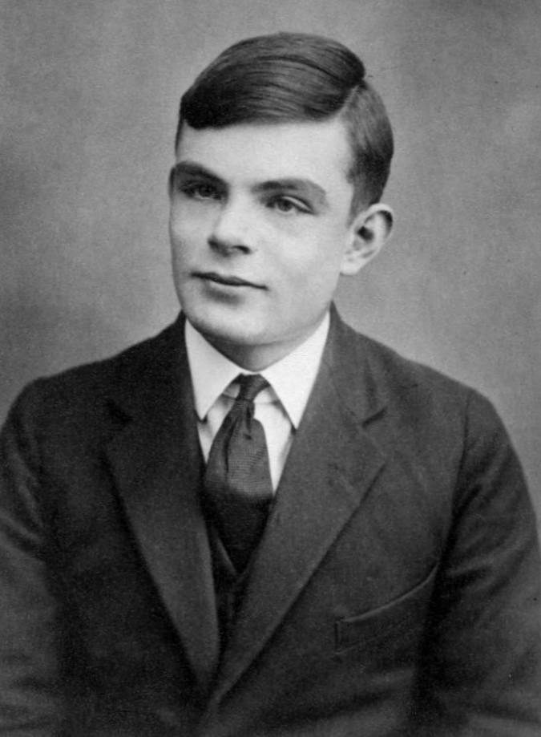
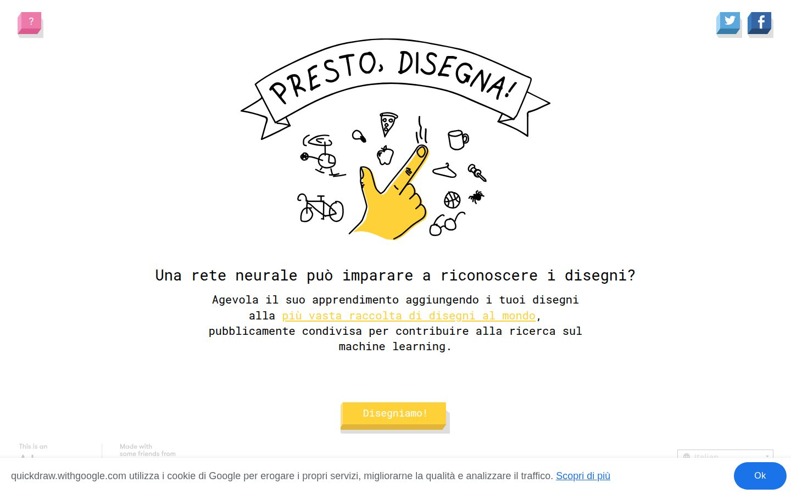
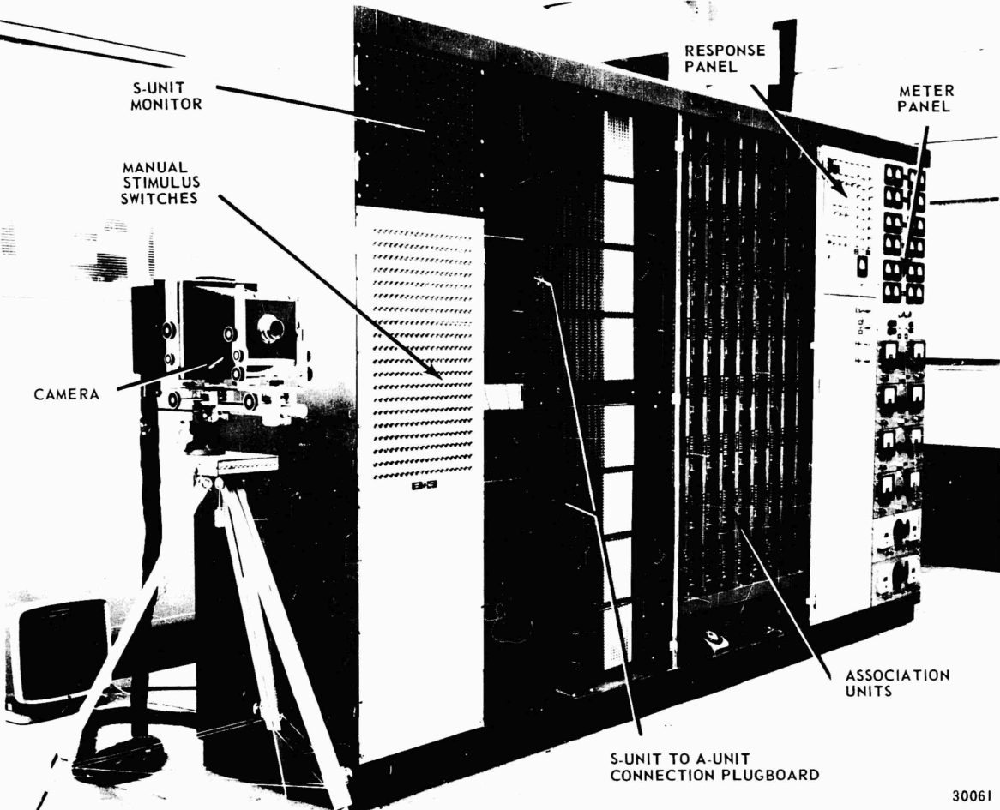
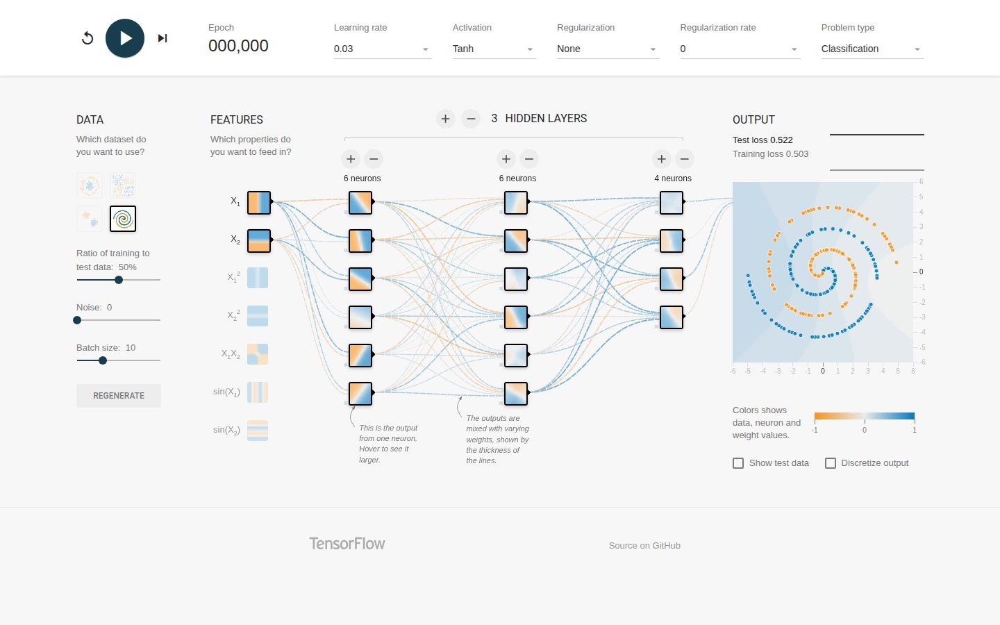
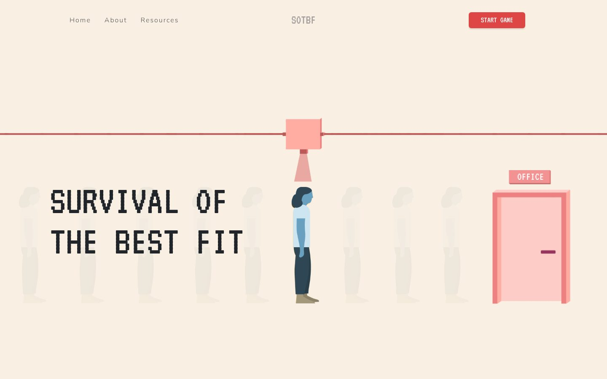

Come impara una macchina, e perché a volte impara la cosa sbagliata
Ingegnere, dottore di ricerca in Smart Computing. Costruisco sistemi che vedono: per l'industria, per la clinica, per la ricerca.
Robot che cercano perdite di gas negli impianti, con visione artificiale 2D e 3D. Progetto CARES con Nuovo Pignone.
Un sistema di eye tracking che usano ortottisti e oculisti per i test dei movimenti oculari. Dalla telecamera al software in clinica.
Quanto è "sepolto" ogni atomo di una proteina, e cosa ci dice sugli effetti di una mutazione (SADIC).
E poi: insegno programmazione e IA in corsi per aziende e per la formazione professionale, e sono cofondatore di Studialibero, un'associazione di tutoraggio gratuito contro la dispersione scolastica.
Pause alle 10:45 e alle 15:45 · pranzo 13:00–14:00 · le demo si aprono dal telefono
Per settant'anni abbiamo dato ai computer delle regole. Poi abbiamo cominciato a dargli degli esempi.
riconosce voi, non una foto
cosa vi mostra, e in che ordine
decide cosa non vedrete
da una lingua all'altra
quanto traffico ci sarà fra 20 minuti
dalla voce al testo
Quasi tutte riconoscono, classificano o prevedono. Non generano niente. È l'IA di cui parliamo oggi.
Fino agli anni '50, il computer era una persona: faceva calcoli a mano, seguendo istruzioni precise, per ore.
In foto: la sala calcolo del NACA (oggi NASA) a Edwards, California, 1949. Le "computer" elaboravano i dati dei voli sperimentali.
Turing immagina la macchina più semplice possibile: un nastro, una testina che legge e scrive un simbolo, e una tabella di regole.

Turing a 16 anni · pubblico dominioIngredienti (input) → passi precisi, finiti, non ambigui → biscotti (output).
In una foto qualsiasi: di lato, al buio, mezzo nascosto dal divano. Ogni regola che scrivete ha dieci eccezioni.
moltiplicare numeri di 20 cifre
giocare a scacchi con regole e calcolo
ricordare un milione di righe
riconoscere un volto
capire una frase detta in fretta
camminare su un terreno sconnesso
Le cose che facciamo senza pensarci sono il frutto di milioni di anni di evoluzione. Nessuno sa scriverne le regole.

Nessuno ha scritto la regola del gatto. La rete ha visto più di 50 milioni di disegni fatti da persone come voi.
Noi scriviamo le regole. La macchina le applica ai dati e produce le risposte.
Noi diamo esempi con la risposta giusta. La macchina ricava da sola le regole, e poi le usa su dati nuovi.
Regole e valutazioni scritte da grandi maestri e programmatori. Calcola circa 200 milioni di posizioni al secondo. Non impara.
Nel Go le mosse possibili sono troppe per calcolarle tutte. Ha imparato da milioni di partite, umane e contro sé stesso. Lo ritroviamo oggi pomeriggio.
Poi pausa fino alle 11:00.
Esempi, numeri, un neurone finto e una regola per correggersi.
Risposta fra poche categorie: classificazione. Risposta numerica: regressione.
| diametro | altezza | cos'è |
| 22,4 | 4,3 | piatto |
| 6,9 | 26,6 | bottiglia |
| … | … | … |
Ogni colonna è una feature: una proprietà misurabile.
I piatti stanno in basso a destra, le bottiglie in alto a sinistra.
Imparare a distinguerli vuol dire trovare un confine fra le due nuvole.
Se l'esame fosse sugli stessi esercizi studiati, il voto non direbbe niente su quanto lo studente ha capito.
Ogni ingresso arriva con un peso: quanto conta. Il neurone li somma e si accende solo se la somma supera la soglia.
Pesi scelti da noi: wD = −1 per il diametro, wA = +1 per l'altezza, soglia 0. Bottiglia se il punteggio è ≥ 0.
−1 · 22,4 + 1 · 4,3 = −18,1
Sotto la soglia → piatto ✓
−1 · 6,9 + 1 · 26,6 = +19,7
Sopra la soglia → bottiglia ✓
Tutto il "sapere" del neurone sta in tre numeri: due pesi e una soglia. E chi li ha scelti?
Da una parte il neurone dice "bottiglia", dall'altra "piatto".
Cambiare i pesi = ruotare la retta. Cambiare la soglia = spostarla.
Un neurone da solo sa fare solo questo: tagliare il piano in due.
Una macchina vera, il Mark I: una "retina" di 400 fotocellule collegate a neuroni elettrici. I pesi erano manopole girate da motori.

manuale del Mark I · pubblico dominioSe una retta che separa le classi esiste, Rosenblatt dimostrò che il percettrone la trova.
Quadrati in due angoli opposti, cerchi negli altri due. Provate a separarli con una sola retta.
1969: Minsky e Papert dimostrano i limiti del percettrone. I finanziamenti spariscono: è il primo inverno dell'IA.
Come si risolve? Lo vediamo dopo pranzo.
con la risposta giusta
le cose diventano numeri
quanto conta ogni numero
quando decidere "sì"
da cui si impara
Pranzo. Si riprende alle 14:00.
Più neuroni, più strati, e un modo per addestrarli tutti insieme.
Il primo neurone traccia una retta.
Il secondo ne traccia un'altra.
Un terzo neurone guarda le loro risposte e dice: "quadrato se sei fra le due rette".
Questa è una rete neurale a due strati.
Per ogni scelta dei pesi la rete fa un certo errore sugli esempi. Immaginatelo come un'altitudine.
Al buio, sentite solo la pendenza sotto i piedi. Fate un passo in discesa. Poi un altro.
È la discesa del gradiente. Con milioni di pesi, milioni di dimensioni: stessa idea.
Scende sicura, ma ci mette un'eternità.
Arriva in fondo in pochi passi.
Scavalca il fondo, rimbalza, e a volte esplode.
L'errore si misura all'uscita. Ma i pesi da correggere sono dappertutto.
La backpropagation ripartisce l'errore all'indietro, strato per strato: ogni peso riceve la sua parte di colpa e si corregge di conseguenza.

Nessuno ha detto alla rete di cercare i bordi. Li ha trovati da sola, perché servivano a ridurre l'errore.
Un piccolo quadrato di pesi passa su tutta l'immagine. Dove trova il motivo che cerca (qui: un bordo verticale) si accende.
Una rete convoluzionale ha centinaia di filtri per strato, e i loro pesi non li sceglie nessuno: si imparano.
Per vederlo su una rete vera: CNN Explainer
Un modello troppo complicato passa per tutti gli esempi, rumore compreso.
Perfetto sugli esercizi. Disastroso all'esame. Per questo serve il test su dati mai visti.
Apprendimento per rinforzo: nessuno dice la risposta giusta.
Tornare nel ristorante che conoscete e che vi piace. Sicuro, ma non scoprirete mai che ce n'è uno migliore dietro l'angolo.
Provarne uno nuovo. A volte si mangia male, ma è l'unico modo per imparare qualcosa.
Un agente che non esplora mai si accontenta della prima soluzione che trova.
Due squadre giocano a nascondino, centinaia di milioni di partite. Premio: farsi trovare o trovare.
Video (2 minuti)
openai.com/index/emergent-tool-use
Serve internet. Cercate anche "OpenAI hide and seek" su YouTube.
Pausa fino alle 16:00. Poi: cosa succede quando questi modelli escono dal laboratorio.
Per ogni caso, una domanda: cosa ha imparato davvero il modello, e da quali dati?
Nessuna partita umana: solo le regole e partite contro sé stesso. Dopo tre giorni batte la versione che aveva battuto Lee Sedol, cento partite a zero.
Decisione presa in pochi millisecondi, pianta per pianta, mentre il trattore avanza.
Berlino, 1907: Hans "risolveva" le addizioni battendo lo zoccolo. In realtà leggeva le reazioni involontarie di chi lo interrogava. Rispondeva giusto, per il motivo sbagliato.
Riconosce la retinopatia diabetica dalle foto dell'occhio con precisione da specialista.
Luce scarsa, fotocamere diverse, connessione lenta. Più di un'immagine su cinque rifiutata come "di qualità insufficiente". Pazienti rimandati a un altro giorno.
I dati di addestramento non sono il mondo. Il modello è un pezzo di un sistema fatto di persone, procedure e strumenti.
Ogni modello dà un punteggio. La soglia decide cosa diventa "sì".

Spoiler: il modello è il pezzo più piccolo.
Calcola quanto è "sepolto" ogni atomo nella struttura 3D. Le mutazioni in profondità tendono a destabilizzare di più: la profondità diventa una feature per prevedere l'effetto.
DeepMind classifica 71 milioni di possibili sostituzioni di un amminoacido come probabilmente innocue o dannose, partendo da AlphaFold.
Pubblicato su Nature a gennaio 2026: legge fino a un milione di basi di DNA e prevede come una variante cambia la regolazione dei geni.
Dalle feature scelte a mano a modelli che imparano da soli cosa guardare: la stessa storia di questa mattina, in piccolo.
Per i test dei movimenti oculari che fanno ortottisti e oculisti.
telecamera, luce, posizione
migliaia di frame etichettati
trova pupilla e direzione
dentro il software clinico
chi lo usa ogni giorno
Il modello è un quinto del lavoro. Il resto è tutto quello che gli sta intorno, ed è lì che i progetti di solito falliscono.
Ispezione di impianti industriali: dove l'errore costa caro e gli esempi di "perdita" sono rari.
immagini 2D e nuvole di punti 3D
componenti e oggetti dell'impianto
la perdita, che è un evento raro
dove mandare il robot e quando chiamare una persona
Due temi di oggi in un progetto solo: pochi esempi del caso che conta, e la soglia, cioè quanti falsi allarmi siamo disposti ad accettare.
Una rete che classifica la parola successiva, addestrata su miliardi di frasi. È il punto di partenza del prossimo modulo.
Slide e demo restano online: riprovatele con calma, e fatele provare a qualcuno.
Giacomo Nunziati · AI for Future · Santa Chiara Lab, Università di Siena